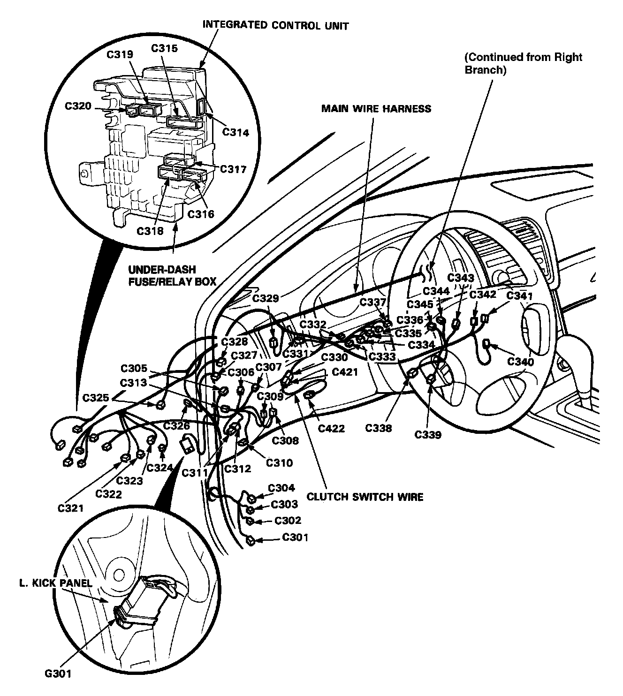

Operation CHARM
: Car repair manuals for everyone.
Home
>>
Acura
>>
1991
>>
Legend Coupe V6-3206cc 3.2L SOHC FI
>>
Repair and Diagnosis
>>
Diagrams
>>
Harness
>>
Main Wire Harness
>>
Left Side of Dash and Floor Branch
Left Side of Dash and Floor Branch
Main Wire Harness (Left Branch):
